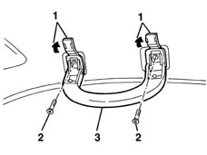

7065C30 interior l/h or r/h grab handle (one) - r+r
- Path
- Procedures > 70 FITTINGS > 7065 SEAT BELTS AND ACCESSORIES > 7065C accessories and decorations > 7065C30 interior l/h or r/h grab handle (one) - r+r
- Kind
- repair procedure (removal / refitting; the operation number is the code)
- Applies to
- all engines; all production periods
- Interactive page
- https://sloeber94.github.io/elrnDB-lYpsln/en/#/2429695
Applies to: all engines; all production periods
 Removing
Removing
 Refitting
Refitting1. Release and lift up the covers.
2. Undo the bolts.
3. Remove the grab handle.

Applies to: all engines; all production periods
Refitting
RemovingCheck that the grab handle is not damaged.
Fit the handle.
Tighten the bolts.
Fit the covers.
Check that the handle is moving properly.
Topics that link to this page (11)
- 5570T26 aerial for car radio - r+r
- 5580C50 (HEAD- BAG MODULE ) (one), left or right - R.R.
- 7015A14 tailgate - adjust centring and profile - includes hinge and compartment seal adaptation
- 7015A24 tailgate hinges - repair or replace with tailgate removed
- 7030B47 GUIDE device for sliding roof movement control cables - R.R .
- 7030B48 FIXED REAR TRANSPARENT section of sliding roof - R.R .
- 7030B50 sun roof guide , one , lh or rh - r r
- 7030B70 sun-roof control switch - r+r
- 7035A18 windscreen glass r r including cleaning of housing
- 7040H10 roof panel lining - r r
- 7040H16 roof panel lining - r r